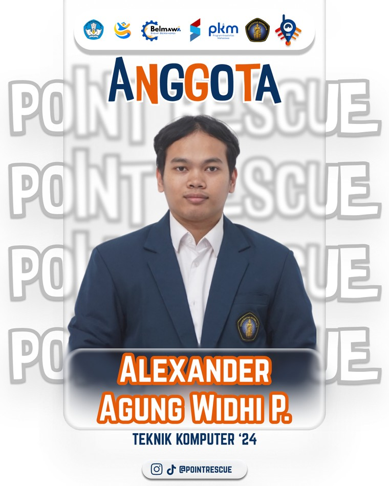
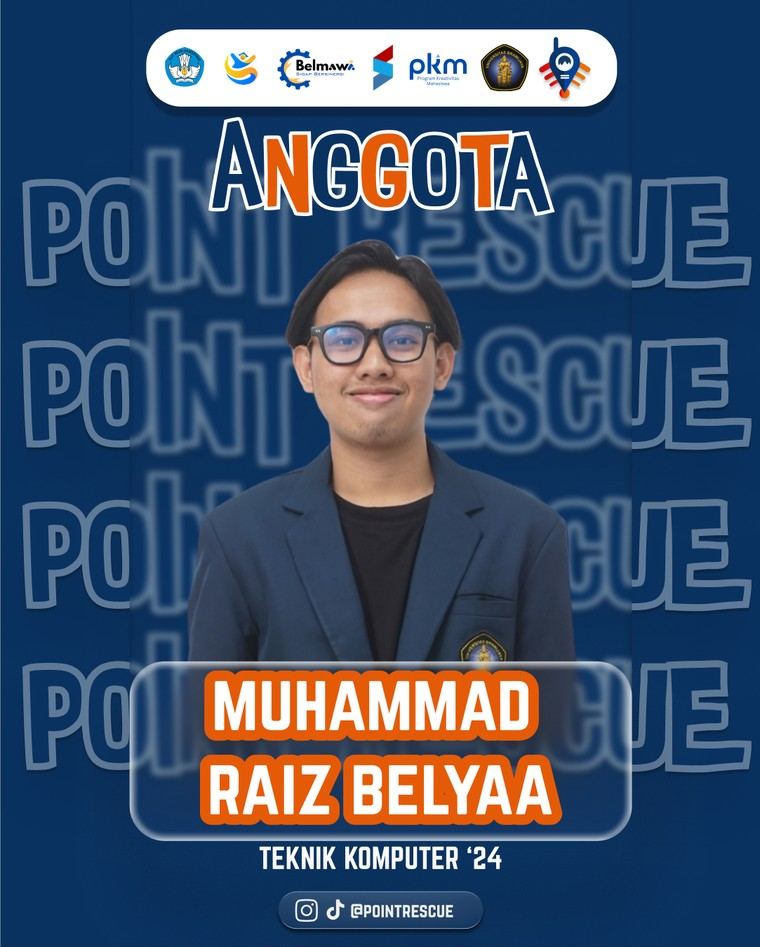
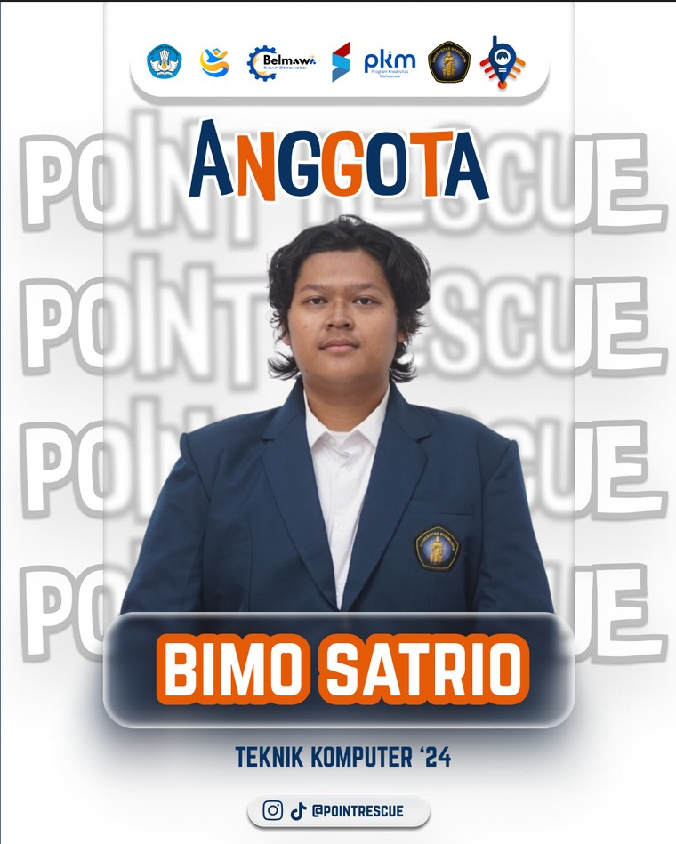

Pencapaian larimu tidak harus berhenti sebagai angka di layar. Dari berkas Strava atau GPX, kami membuatkan poster rute, model tiga dimensi, halaman kenangan yang bisa dibagikan, sampai bingkai fisik untuk dipajang di rumah.
Dirender dari data GPX
Distance
10.21 km
Pace
6:00 /km
Elev Gain
213 m
RouteStory
QR menuju microsite rute
Aplikasi pencatat aktivitas seperti Strava menyimpan rute, jarak, durasi, pace,
elevasi, dan tanggal secara detail — tetapi data itu nyaris tidak pernah
digunakan lagi setelah aktivitas selesai.
RouteStory menjembatani hal tersebut. Kami mengolah rute dan
statistik dari aktivitasmu, merancang desainnya bersamamu, menyiapkan pratinjau
sebelum apa pun dicetak, lalu menyerahkan hasilnya dalam bentuk digital maupun
fisik — semuanya dikerjakan rapi sebagai satu proyek.
Pengumpulan & validasi data
Pengolahan GPX & koordinat GPS
Ekstraksi statistik perjalanan
Visualisasi & pemodelan rute
Desain & pratinjau digital
Pengelolaan data & proyek
Integrasi dengan produksi fisik
Menjadi perusahaan teknologi kreatif yang mampu mengubah rekam jejak digital aktivitas olahraga menjadi karya personal bernilai emosional, estetis, dan berkesan dalam jangka panjang.
RouteStory mengubah data aktivitas yang sebelumnya hanya mengendap di dalam aplikasi menjadi produk personal yang memiliki nilai emosional sekaligus nilai jual. Bagi pengguna, produk berfungsi sebagai simbol pencapaian. Bagi perusahaan, variasi data dan kebutuhan pelanggan membentuk peluang layanan kustom berbasis proyek.
Mulai dari olah data aktivitas sampai bingkai siap pajang. Pilih kategori untuk menyaring, lalu klik kartu mana pun untuk melihat apa saja yang Anda terima, alur pengerjaannya, dan jaminan layanannya.
Seluruh harga yang ditampilkan adalah estimasi awal untuk keperluan demonstrasi. Harga final mengikuti kesepakatan ruang lingkup pada tahap Plan.
Supaya Anda tahu persis pesanan Anda sedang ada di mana. Klik tahap mana pun untuk melihat apa yang dikerjakan di dalamnya, beserta posisinya pada siklus PDCA.
Penasaran rute Anda akan terlihat seperti apa? Unggah berkas
.gpx milik Anda sendiri, atau pakai
contoh data kami, dan lihat pratinjaunya langsung di halaman ini.
Berkas Anda diproses sepenuhnya di perangkat Anda — tidak ada yang dikirim ke server kami.
Seret berkas .gpx ke sini
atau klik untuk memilih berkas
Semakin besar toleransinya, semakin sedikit titik yang disimpan. Geser dan perhatikan bagaimana bentuk rute tetap bertahan.
$ menunggu berkas masukan...
Hasil pemrosesan akan muncul di sini
Unggah berkas atau pakai contoh data untuk memulai.
Karena kami bekerja per proyek, biaya mengikuti ruang lingkup. Susun kebutuhan Anda di bawah ini untuk melihat estimasi biaya dan jadwal secara langsung.
Estimasi otomatis, bukan penawaran mengikat.
Estimasi total
Rp 0
Perkiraan jadwal
—
Layanan yang tercakup
Setiap pelanggan membawa data, kebutuhan, dan hasil yang berbeda. Karena itu satu pesanan diperlakukan sebagai satu proyek: punya awal dan akhir, ruang lingkup, sumber daya, biaya, risiko, dan hasil yang dapat dievaluasi — dijalankan dengan siklus PDCA.
Menerima berkas GPX, mengidentifikasi jenis aktivitas dan informasi yang akan ditampilkan, menentukan desain, ukuran, bahan, jadwal, biaya, batas revisi, serta mengidentifikasi risiko seperti data tidak lengkap atau rute GPS tidak akurat.
Mengekstrak rute dan statistik, menyederhanakan data bila perlu, membuat visualisasi digital, mengubah rute menjadi model tiga dimensi, menambahkan elemen personal, menyusun pratinjau, lalu produksi setelah desain disetujui.
Memeriksa kesesuaian bentuk rute; ketepatan jarak, waktu, dan pace; ejaan nama dan tanggal; kesesuaian warna dan tata letak; kualitas cetak tiga dimensi; kekuatan perakitan; serta kondisi produk sebelum dikemas.
Melakukan koreksi bila ditemukan ketidaksesuaian, mengemas dan mengirim produk, mencatat hasil proyek dan masukan pelanggan, menutup proyek, lalu memakai hasil evaluasi untuk memperbaiki proyek berikutnya.
| Siklus Proyek | PDCA | Aktivitas RouteStory |
|---|---|---|
| Inisiasi dan perencanaan | Plan | Pengumpulan kebutuhan, validasi data awal, penetapan ruang lingkup, jadwal, dan biaya. |
| Pelaksanaan | Do | Pengolahan GPX, visualisasi, pemodelan 3D, personalisasi, dan produksi. |
| Monitoring dan pengendalian | Check | Pemeriksaan data, desain, kualitas cetak, dan hasil perakitan. |
| Penutupan dan evaluasi | Action | Koreksi, penyerahan, dokumentasi, evaluasi, dan penutupan proyek. |
Proyek adalah sumber utama penciptaan nilai, sedangkan kegiatan operasional di bawah ini menjaga kemampuan perusahaan menjalankan proyek secara berkelanjutan.
Setiap anggota memiliki fungsi utama, tetapi bekerja bersama berdasarkan kebutuhan proyek pelanggan.

Mengarahkan strategi teknologi, mengawasi portofolio proyek, dan memastikan proses digital mendukung tujuan bisnis.

Mengelola ruang lingkup, jadwal, biaya, risiko, komunikasi pelanggan, pembagian tugas, serta penutupan proyek.

Memvalidasi data aktivitas, menganalisis kebutuhan sistem, mengolah informasi rute, dan memastikan ketepatan statistik.
Project Manager menjadi penghubung antara pelanggan dan tim pelaksana. System & Data Analyst memastikan data yang digunakan benar, sedangkan 3D Designer & Production menerjemahkan data tersebut menjadi desain dan produk. CIO / Head of Project mengawasi konsistensi teknologi dan arah pengembangan perusahaan.
Rencana pengembangan: seiring bertambahnya proyek, fungsi tambahan yang akan dibuka mencakup Application Developer, UI/UX Designer, Customer Support, Marketing, dan Quality Assurance.